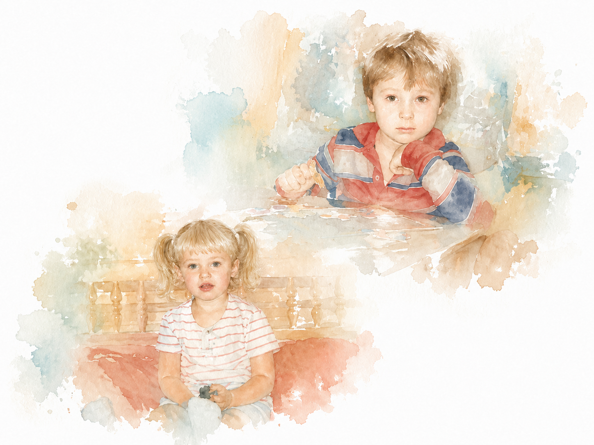
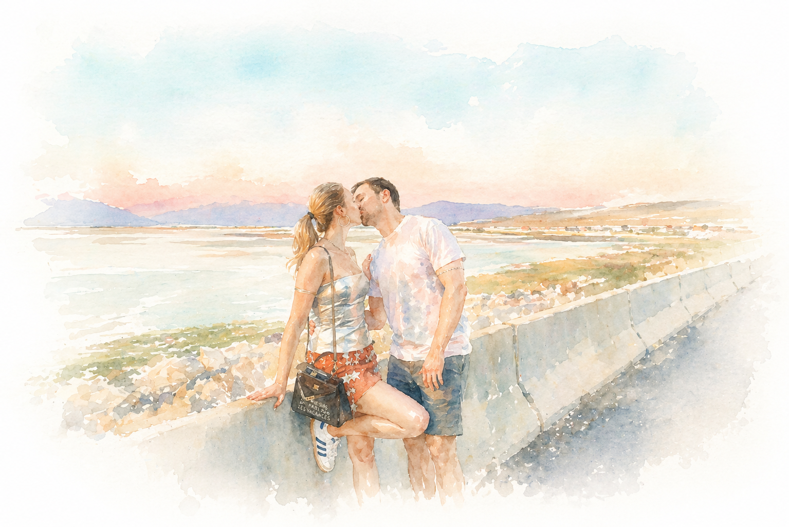
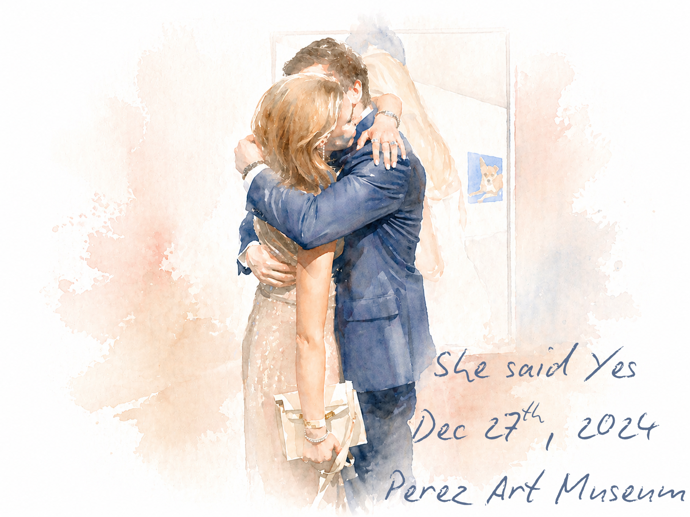

Our Story
Eric and Polina's story begins long before they ever met. Both were born in Moscow and raised in Russian-speaking families, carrying a shared heritage that still shapes their world. Though life has brought them into English, there is something intimate and irreplaceable about returning to Russian—a language that feels like home.

Eric moved to Brooklyn at the age of three and, in his twenties, began building his life in Manhattan, where he founded Khrom Capital. Years later, Polina arrived in the same city at twenty-two, pursuing her master's degree and beginning her career in marketing. They came remarkably close to meeting—but timing had other plans. Just after Eric moved from New York to Miami, Polina unknowingly stood on the doorstep of his former home and even took a photo there. They had missed each other by months.
Then everything aligned.
Less than a month after Polina arrived in Miami, Eric—on a whim—downloaded a dating app for the first time. They matched instantly, leading to his first—and ultimately only—date from an app. From the very beginning, it felt unlike any first date either of them had experienced before. The evening unfolded with an effortless rhythm: from a visit to a jewelry company Eric was considering investing in, where they naturally found themselves discussing the business, to a drive through Coral Gables with the top down, the breeze catching their hair beneath the banyan trees, to dinner at Ariete, where conversation flowed endlessly and they became quietly captivated by each other. Not wanting the night to end, they called friends to join them for a drink—stretching a perfect evening just a little longer.
From that moment on, they were inseparable. What grew between them was not only a deep emotional connection, but a rare alignment—intellectual curiosity, ambition, devotion to family, and a shared rhythm of pushing hard during the day and finding comfort in each other at night. Being together felt, from the very beginning, like something extraordinary.

Their relationship moved quickly, but never felt rushed. They moved in together just one month after meeting, and one year later, Eric planned a proposal as thoughtful as it was unforgettable. He brought Polina to the Pérez Art Museum Miami, where the final piece in their tour revealed a painting of them—Eric down on one knee, asking her to spend her life with him. On December 27, 2024, Polina said yes.

Now, they begin the next chapter of their story—grateful for the path that led them to each other, and excited for everything that lies ahead as husband and wife.